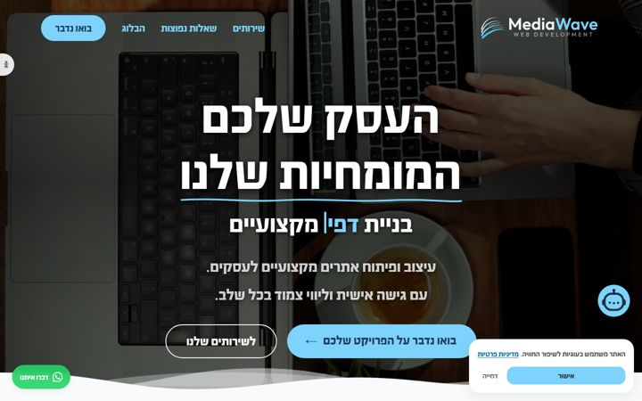
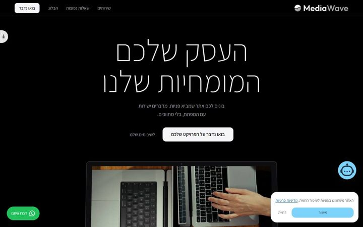
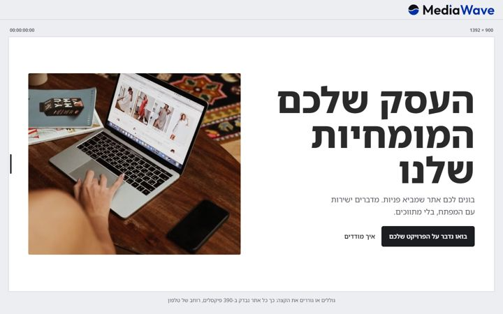

ארבעה כיוונים חדשים
העיצוב נשאר כמו שאהבת: רקע אפור, משטחים לבנים, דיו שחור, פונט אחד. מה שמתחלף הוא הרעיון. הטלפון, הגרירה ל-390, מחוון הציון והטיימקוד מהסבב הקודם פסולים, וגם גל וים.
כל כרטיס מריץ את הרגע המרכזי שלו בלולאה. בכרטיס הראשון אפשר להזיז את העכבר על הבמה.
#ECEEF1 רקע #FFFFFF משטח #1B1D21 דיו · נעול לפי בחירתך (15.10.2026)
A
רנטגן
חומר: האתר עצמוההמלצה שלי
העמוד שקוף. עדשה עוברת על האתר, ומתחתיו רואים איך הוא בנוי ואיך הוא נטען ברגע זה, בטלפון של מי שגולש.
העסק שלכם
המומחיות שלנו
בונים לכם אתר שמביא פניות. מדברים ישירות עם המפתח, בלי מתווכים.
בואו נדבר על הפרויקט שלכם
העסק שלכם
המומחיות שלנו
14<h1> Noto Sans Hebrew 800
15<p> 17px / 1.6 · max 34ch
wa.me/972528731808
lens.mp4 · 720×720
7.6 s · H.264 · 723 KB
נטען אצלך ב-...
הלולאה: העדשה עוברת על ההירו · עכבר: העדשה עוקבת
- ההירו
- עדשה עגולה עוקבת אחרי העכבר. בתוכה אותו הירו בנגטיב: הכותרת כקו מתאר עם קו בסיס, הסרטון כמסגרת עם המשקל האמיתי שלו, הכפתור עם הקישור שהוא פותח. בטלפון: פס סורק קבוע באמצע המסך, והעמוד עובר דרכו בגלילה.
- הרגע המרכזי
- בפרק "מודדים" העדשה נפתחת לכל המסך, וכל העמוד הופך לרנטגן עם המספרים שנמדדו עכשיו במכשיר של המבקר: זמן טעינה, משקל, כמה בקשות. קאט חד חזרה לעיצוב.
- ההוכחה
- מספרים חיים מהדפדפן של המבקר (Performance API), לא מספר שכתבנו. המספר בפינה של הבמה הזאת נמדד עכשיו, על הדף הזה, אצלך.
- הקדושים
- הסרטון מתנגן בהירו כרגיל, וברנטגן רואים את הנתונים שלו. 13 הלוטים: בעדשה רואים את קווי הציור שלהם.
- מבחן החלפה
- מקצוע אחר: נשבר. מתחרה בתחום: יכול להעתיק את העדשה, אבל לא את מה שמתחתיה.
- סיכון
- שזה ייראה כמו כלי מפתחים. לכן מעט קוד, קריא, ותמיד בעברית כשאפשר.
B
השיחה
רגע: הלקוח מדבר עם מי שבונה
האתר נבנה מתוך שיחה. כל הודעה שהלקוח שולח לנתי עפה מהשיחה ונהיית חלק מהאתר, מול העיניים.
נתיהיי, מה העסק שלכם?
מספרהקליניקהמאפייהמשרד עו"ד
אתםאפשר שהכפתור יהיה מלא?
נתיyour-site.co.il · באוויר
localhostהדגמהמספרה
קביעת תור
כל לולאה: עסק אחר, אתר אחר לגמרי
- ההירו
- שיחה ריקה. נתי שואל "מה העסק שלכם?" והמבקר בוחר: מספרה, קליניקה, מאפייה, משרד עורכי דין. ההירו של אתר דוגמה נבנה מהתשובה, וכל בחירה נראית אחרת לגמרי (מסומן "הדגמה").
- הרגע המרכזי
- צילום מסך עם עיגול של לקוח עף מהשיחה, נוחת על האתר, והחלק המסומן מתוקן. בסוף: הקישור נשלח, והאתר באוויר.
- ההוכחה
- מי שעונה בשיחה הוא מי שכותב את הקוד. החשש "שזה ייראה כמו תבנית" נענה בארבעה עסקים וארבעה אתרים שונים.
- הקדושים
- הסרטון הוא ההירו של אתר הדוגמה הראשון. הלוטים הם האיורים שנכנסים לאתר שנבנה.
- מבחן החלפה
- מקצוע אחר: חלקית. מתחרה: חלקית; מה ששורד הוא "נתי עונה בעצמו".
- סיכון
- להיראות כמו וואטסאפ (מותג של אחרים): בלי ירוק ובלי הבועות שלהם. ארבעה עיצובי דוגמה הם עבודה.
C
שוט אחד
מסורת: שוט ארוך בלי קאט, מעולם העריכה
כל העמוד הוא שוט אחד בלי קאט: מצלמה טסה מעל דגם נייר לבן של אתר שלם, נוחתת על כל חלק עד שהוא הופך למסך, ובסוף מתרחקת עד שהכל נכנס לטלפון אחד.
מבט על > נחיתה על ההירו > התרחקות לטלפון
- ההירו
- מבט מלמעלה על שולחן אפור, ועליו דגם נייר של אתר שלם: חלקים לבנים, כותרות בשחור, הסרטון מתנגן על פיסת נייר. גוללים, המצלמה יורדת ומתיישרת, והדגם נהיה העמוד האמיתי.
- הרגע המרכזי
- בסוף העמוד המצלמה מתרחקת, וכל מה שעברתם מתכווץ לגודל של טלפון. שוט אחד, מההתחלה ועד הסוף.
- ההוכחה
- העבודה עצמה: תנועת מצלמה רציפה בלי קפיצות היא הדגמה של עריכה ושל קוד גם יחד.
- הקדושים
- הסרטון על פיסת הנייר של ההירו, הלוטים על פיסות הנייר של השירותים.
- מבחן החלפה
- מקצוע אחר (אדריכלות): חלקית. מתחרה: חלקית.
- סיכון
- תלת-ממד ב-CSS כבד בטלפון. בטלפון: אותו דגם במבט קבוע, בלי טיסה.
D
גרסה אחרי גרסה
מסמך: ההיסטוריה של האתר הזה
האתר מראה את ההיסטוריה של עצמו. גוללים ועוברים בקאטים חדים בין הגרסאות האמיתיות של mediawave.co.il, עד היום. רק הכותרת לא השתנתה.



גרסה
צילומי מסך אמיתיים של האתר, מהארכיון של הפרויקט
- ההירו
- ההירו מתחלף בקאטים בין גרסאות אמיתיות, עם תאריך לכל אחת. הכותרת "העסק שלכם / המומחיות שלנו" שרדה את כולן, והיא מה שהמבקר זוכר.
- הרגע המרכזי
- פרק "מתקנים": תיקון אמיתי מההיסטוריה, לפני ואחרי, עם הסיבה במילים של נתי.
- ההוכחה
- הכל אמיתי: צילומים, תאריכים ושינויים מתוך ההיסטוריה של הפרויקט.
- הקדושים
- הסרטון והלוגו הם מה שנשאר קבוע בין הגרסאות. הלוטים מופיעים בגרסאות שבהן הם חיו.
- מבחן החלפה
- מקצוע אחר: נשבר. מתחרה: נשבר. לאף אחד אחר אין את ההיסטוריה הזאת.
- סיכון
- גרסאות ישנות פחות יפות, ושזה ייקרא כמו "מחליפים דעה כל שבוע". הניסוח: לא עוצרים בגרסה הראשונה.
S
תבנית סוכנות אפורה
הכיוון הבטוח · נפסל
כותרת ממורכזת, שני כפתורים, פס לוגואים, שלושה כרטיסים, באותם צבעים. נפסל כי זה נראה כמו כל סוכנות שהלקוח כבר השווה, ומסתיר את מה שרק MediaWave עושה.
- למה הוא כאן
- כדי שיהיה ברור מה נפסל ולמה. הוא לא מומלץ.